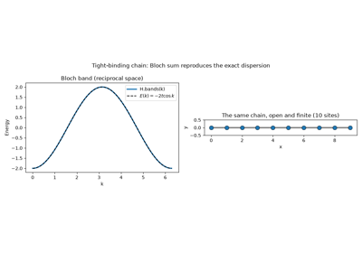
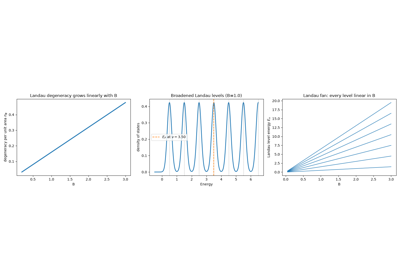
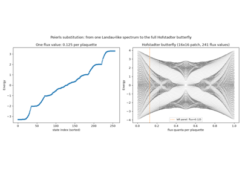
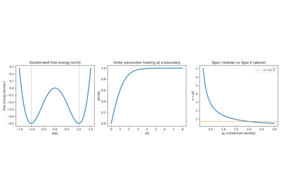
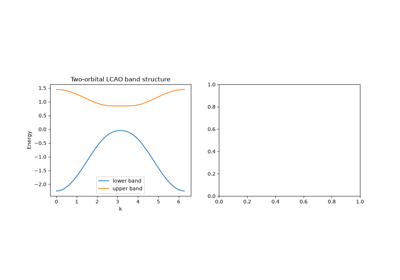
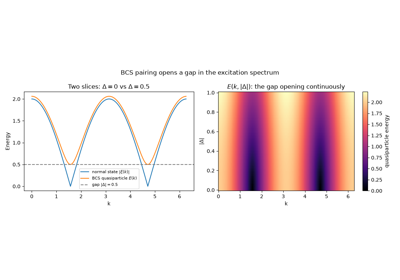
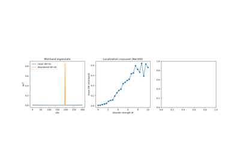
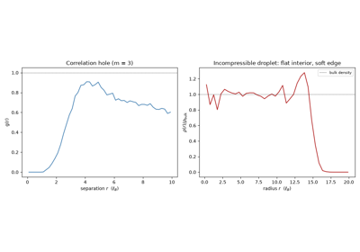
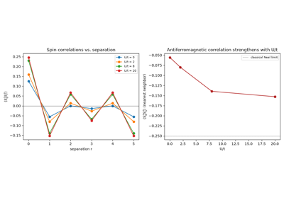

Breakthroughs in Condensed Matter Physics#
“More is different.” – P. W. Anderson, Science, 1972
Condensed matter physics is the study of what happens when enormous numbers
of quantum particles are put together: emergent order, broken symmetries,
and – since the 1980s – emergent topology. This chronology traces the
major conceptual breakthroughs behind physicskit.condensed, from
Bloch’s 1928 theorem to the topological superconductors of the 21st
century. Every stop has a pointer to the corresponding implementation in
this package, a structural diagram of the system it describes, and a
short, runnable example reproducing the milestone’s signature observable.
1928 – Bloch’s Theorem and Band Theory#
Felix Bloch showed that the eigenstates of a single electron in a perfectly periodic crystal potential \(V(\mathbf{r}) = V(\mathbf{r} + \mathbf{R})\) take the form
turning the Schrodinger equation \(H\psi = E\psi\) for an infinite solid into a finite eigenvalue problem \(H(\mathbf{k})u_{n\mathbf{k}} = E_n(\mathbf{k}) u_{n\mathbf{k}}\) at each crystal momentum \(\mathbf{k}\), periodic on the Brillouin zone torus. This single idea – that a crystal’s electronic structure decomposes into bands \(E_n(\mathbf{k})\) – is the foundation of every model in this package.
Implementation: physicskit.condensed.tight_binding.Hamiltonian
constructs \(H(\mathbf{k})\) directly by Bloch-summing real-space
hoppings; bands()
returns \(E_n(\mathbf{k})\).
build_finite_cluster() truncates
that same translational symmetry to a finite, open chain, so
plot_lattice_structure() can draw
the real-space structure Bloch’s theorem is summing over directly,
alongside the reciprocal-space band.
References: F. Bloch, “Uber die Quantenmechanik der Elektronen in Kristallgittern,” Z. Phys. 52, 555-600 (1929).

Bloch’s Theorem: From an Infinite Chain to H(k)
1930 – Landau Levels and Quantum Diamagnetism#
Lev Landau solved the quantum mechanics of a charged particle in a uniform magnetic field, finding that the continuous kinetic energy spectrum collapses into discrete, macroscopically degenerate levels
Quantized cyclotron orbits are the microscopic origin of orbital (Landau) diamagnetism in metals, and, decoupled from any lattice, the direct ancestor of the quantum Hall effect fifty years later. Each level’s macroscopic degeneracy per unit area,
set by the magnetic length \(\ell_B\), is what makes a partially filled Landau level’s filling factor \(\nu = n_e/n_B\) the natural variable of the quantum Hall effect below.
Implementation: physicskit.condensed.landau_levels.landau_level_energies(),
landau_degeneracy(), and
filling_factor() implement this
continuum solution directly; the Peierls substitution in
physicskit.condensed.tight_binding.apply_peierls_phase() is the
lattice (tight-binding) route to the same physics – turning a uniform
flux into Hofstadter-like, near-degenerate bands on a finite lattice, and
sweeping the flux continuously from 0 to 1 traces out the full Hofstadter
butterfly itself.
References: L. Landau, “Diamagnetismus der Metalle,” Z. Phys. 64, 629-637 (1930).

Landau’s 1930 Solution: Discrete Levels from a Continuous Field

Peierls Substitution: A Hofstadter-Like Spectrum from Landau’s Physics
1950 – Ginzburg-Landau Theory#
Vitaly Ginzburg and Lev Landau proposed a phenomenological theory of superconductivity built entirely on symmetry, seven years before BCS supplied a microscopic mechanism: expand the free energy in a complex order parameter \(\psi(\mathbf{r})\) (the superconducting condensate wavefunction) and its gradient,
and let symmetry and stability alone fix the physics. Minimizing \(f\) gives a nonzero equilibrium \(|\psi_0|^2 = -a/b\) below the transition (\(a<0\)) and, from the competition between the gradient term and the electromagnetic coupling absorbed into it, two emergent length scales: the coherence length \(\xi\) over which \(\psi\) heals from a boundary back to \(\psi_0\), and the magnetic penetration depth \(\lambda\). Their ratio, the Ginzburg-Landau parameter \(\kappa=\lambda/\xi\), alone decides whether flux is excluded entirely (Type I, \(\kappa<1/\sqrt2\)) or threads the material as a vortex lattice (Type II, \(\kappa>1/\sqrt2\)). This order-parameter, broken-symmetry language – rather than any microscopic pairing mechanism – is exactly what reappears at the 2D XY model’s Kosterlitz-Thouless transition below.
Implementation: physicskit.condensed.ginzburg_landau.gl_equilibrium_order_parameter(),
gl_coherence_length(),
gl_penetration_depth(), and
ginzburg_landau_parameter()
compute exactly these quantities;
gl_order_parameter_profile()
is the exact healing profile at a boundary.
References: V. L. Ginzburg and L. D. Landau, “On the theory of
superconductivity,” Zh. Eksp. Teor. Fiz. 20, 1064-1082 (1950); the Type-II
vortex lattice that ginzburg_landau_parameter()
selects between was itself solved by A. A. Abrikosov, Zh. Eksp. Teor.
Fiz. 32, 1442-1452 (1957) [Sov. Phys. JETP 5, 1174-1182 (1957)].

Ginzburg-Landau Theory: Healing Length and Type I vs Type II
1954 – The Slater-Koster Tight-Binding Framework#
John Slater and George Koster showed how to build realistic band structures from a minimal empirical basis: a linear combination of atomic orbitals (LCAO), with hopping matrix elements between neighboring orbitals as fitting parameters rather than computed from first principles. This traded first-principles rigor for tractability and physical transparency, and remains the standard language for model-building in condensed matter theory to this day.
Implementation: physicskit.condensed.tight_binding.Lattice and
physicskit.condensed.tight_binding.Hamiltonian are a direct,
general-purpose realization of the Slater-Koster LCAO philosophy –
specify orbitals, specify hoppings, Bloch-sum the result.
References: J. C. Slater and G. F. Koster, “Simplified LCAO Method for the Periodic Potential Problem,” Phys. Rev. 94, 1498-1524 (1954).

Slater-Koster LCAO: Empirical Multi-Orbital Band Structure
1957 – BCS Theory of Superconductivity#
Bardeen, Cooper, and Schrieffer explained superconductivity as a condensate of electron pairs (Cooper pairs) bound by an effective phonon-mediated attraction, however weak. Pairing opens a gap \(\Delta\) in the single-particle excitation spectrum, and the resulting condensate flows without dissipation. The Bogoliubov-de Gennes (BdG) formalism recasts this as a single-particle-like problem in an enlarged Nambu (particle-hole) space, diagonalized to give the quasiparticle spectrum \(E(\mathbf{k}) = \sqrt{\xi(\mathbf{k})^2 + |\Delta(\mathbf{k})|^2}\).
Implementation: physicskit.condensed.correlated.bdg_bcs_hamiltonian()
and physicskit.condensed.correlated.bdg_spectrum() build and
diagonalize exactly this s-wave BdG Hamiltonian.
References: J. Bardeen, L. N. Cooper, and J. R. Schrieffer, “Theory of Superconductivity,” Phys. Rev. 108, 1175-1204 (1957); the Bogoliubov-de Gennes formalism: N. N. Bogoliubov, Zh. Eksp. Teor. Fiz. 34, 58-65 (1958); J. G. Valatin, Nuovo Cimento 7, 843-857 (1958).

BCS Theory: The Superconducting Quasiparticle Gap
1958 – Anderson Localization#
Philip Anderson showed that quenched, random disorder is not a small perturbative correction to a metal’s conductivity but can halt transport outright: interference between all the scattering paths off a random potential exponentially localizes every electronic eigenstate, at any nonzero disorder strength, in one and two dimensions (in three dimensions only above a critical disorder, the mobility edge). A localized state’s probability density decays as
with localization length \(\xi\); an extended state instead spreads over the whole system, distinguished numerically by the inverse participation ratio \(\text{IPR}=\sum_i|\psi_i|^4/\left(\sum_i|\psi_i|^2\right)^2\), which is \(O(1/N)\) when extended and \(O(1)\) when localized. This is the disorder physics that broadens the sharp Landau levels above into the finite-width plateaus actually measured in the quantum Hall effect below.
Implementation: physicskit.condensed.anderson_localization.anderson_chain_hamiltonian()
builds the disordered 1D tight-binding chain;
inverse_participation_ratio()
and localization_length()
diagnose localization directly from its eigenstates.
References: P. W. Anderson, “Absence of Diffusion in Certain Random Lattices,” Phys. Rev. 109, 1492-1505 (1958).

Anderson Localization: Disorder Halts Diffusion
1973 – The Kosterlitz-Thouless Phase Transition#
Kosterlitz and Thouless (with foundational input from Berezinskii) identified a phase transition in 2D systems with continuous symmetry that has no local order parameter at all: it is driven instead by the unbinding of topological vortex-antivortex pairs. This was one of the earliest demonstrations that topology, not symmetry breaking alone, can organize a phase transition – a theme that would come to dominate condensed matter theory a decade later.
Where \(J\) is the spin-stiffness (coupling) of the 2D XY model, \(a\) a microscopic core cutoff, and \(L\) the system size: a single vortex costs energy that diverges logarithmically with system size, but its entropy of placement diverges the same way, so a bound vortex-antivortex pair (net energy independent of \(L\)) is thermodynamically favored below \(T_{KT}\) and unbinds above it.
Not implemented as a fermionic band or pairing model – physicskit.condensed
targets those rather than classical XY spin textures, so this transition’s
actual implementation lives in physicskit.statphys instead:
physicskit.statphys.chapters.ising_lattice.XYModel2D Metropolis-
samples the classical 2D XY model directly (built on the numba-jitted
sweep and vorticity kernels in physicskit.statphys.core.monte_carlo),
and vortex_count()
tracks exactly the bound-pair-to-plasma unbinding described above.
Conceptually, within this package, it is the direct ancestor of the
topological (rather than symmetry-breaking) organizing principle that TKNN
and Haldane apply to electronic bands below.
References: J. M. Kosterlitz and D. J. Thouless, J. Phys. C 6, 1181-1203 (1973), with the two-years-earlier precursor V. L. Berezinskii, Sov. Phys. JETP 32, 493-500 (1971).

Kosterlitz and Thouless: the vortex energy-entropy argument
1979 – Su-Schrieffer-Heeger (SSH) Model and Topological Solitons#
Su, Schrieffer, and Heeger showed that a 1D dimerized chain – alternating strong (intracell) and weak (intercell) bonds, modeling polyacetylene – hosts domain-wall solitons pinned to the boundary between the two possible dimerization patterns. Cast on an open finite chain, the same physics produces a pair of protected, exponentially localized zero-energy states, one at each end. It is the earliest and simplest example of the bulk-boundary correspondence that would come to define topological band theory: a bulk topological invariant (the Zak phase) predicting the existence of boundary modes.
Where \(v\) is the intracell hopping amplitude and \(w\) the intercell hopping amplitude, each real. The bulk gap closes only at \(v = w\); for \(v < w\) the chain is topological (Zak phase \(\pi\), protected zero-energy edge modes under open boundaries), and for \(v > w\) it is trivial (Zak phase \(0\), no edge modes).
Implementation: physicskit.condensed.models.ssh_hamiltonian()
(Bloch form) and physicskit.condensed.models.ssh_lattice_hamiltonian()
(real-space builder, for use with build_ribbon());
physicskit.condensed.topology.zak_phase() computes the bulk
invariant.
References: W. P. Su, J. R. Schrieffer, and A. J. Heeger, “Solitons in Polyacetylene,” Phys. Rev. Lett. 42, 1698-1701 (1979).

The SSH Model: Zak Phase and Protected Edge States
1980 – The Integer Quantum Hall Effect#
Klaus von Klitzing, Gerhard Dorda, and Michael Pepper discovered that the Hall conductance of a two-dimensional electron gas in a strong magnetic field is quantized to extraordinary precision,
independent of sample details, geometry, or disorder. The quantization was so precise it now defines the SI standard of electrical resistance; von Klitzing alone was awarded the 1985 Nobel Prize in Physics for the discovery. The puzzle of why an integer emerges with such robustness would be resolved two years later.
Implementation: the effect itself is a bulk transport measurement, but
its topological explanation is directly reproducible on the lattice:
physicskit.condensed.models.harper_hofstadter_hamiltonian() builds
the Bloch Hamiltonian of a 2D electron gas on a lattice threaded by a
rational flux \(p/q\) per plaquette (the lattice route to a magnetic
field, complementing the continuum physicskit.condensed.landau_levels
picture used to motivate it above), and feeding its \(q\) magnetic
sub-bands one at a time into
compute_chern_number() (the same TKNN
machinery applied to Haldane’s model below) gives the exactly quantized
Hall conductance at every gap directly, as a sum of individually integer
Chern numbers.
References: K. von Klitzing, G. Dorda, and M. Pepper, Phys. Rev. Lett. 45, 494-497 (1980).

The Integer Quantum Hall Effect: Quantized Hall Conductance from Chern Numbers
1982 – The TKNN Invariant#
Thouless, Kohmoto, Nightingale, and den Nijs (TKNN) showed that the quantized Hall conductance is a topological invariant: the integral of the Berry curvature \(\Omega(\mathbf{k})\) of the occupied Bloch bands over the Brillouin zone,
now called the (first) Chern number. Because \(C\) can only change when a bulk energy gap closes, it is invariant under any smooth perturbation that preserves the gap – explaining the extreme precision of von Klitzing’s measurement as a topological, rather than a merely material, fact. This is the single idea that turned “band theory” into “topological band theory.”
Implementation: physicskit.condensed.topology.compute_chern_number()
and physicskit.condensed.topology.compute_berry_curvature()
implement the Fukui-Hatsugai-Suzuki lattice discretization of exactly this
integral, returning exactly quantized integers.
References: D. J. Thouless, M. Kohmoto, M. P. Nightingale, and M. den Nijs, Phys. Rev. Lett. 49, 405-408 (1982).

The TKNN Invariant: Exactly Quantized Chern Numbers
1982-1983 – The Fractional Quantum Hall Effect and Laughlin’s Wavefunction#
Daniel Tsui, Horst Stormer, and Arthur Gossard found that an even cleaner two-dimensional electron gas in a strong magnetic field develops Hall plateaus not only at integer filling but at simple fractions, \(\nu = 1/3\) foremost among them – a result the single-particle Landau-level picture behind the integer effect above cannot explain at all, since a partially filled Landau level is macroscopically degenerate and gapless without electron-electron interactions. Robert Laughlin supplied the missing many-body mechanism the following year: a trial wavefunction
(with \(z_j = x_j + iy_j\) the electron coordinates and \(\ell_B\) the magnetic length from the Landau-level analysis above) whose zeroes at coincident particle positions are exactly what strong Coulomb repulsion demands, and whose quasihole excitations carry fractional charge \(e/m\) – the first evidence that a strongly correlated electron liquid can support excitations obeying neither Bose nor Fermi statistics.
Implementation: fractional quantum Hall states are intrinsically
many-body and lie outside the single-particle and mean-field (BdG,
Hartree) framework used elsewhere in physicskit.condensed, but
Laughlin’s trial wavefunction sidesteps diagonalization entirely: its
squared modulus doubles as the Boltzmann weight of a classical 2D plasma
(Laughlin’s own “plasma analogy”), which
physicskit.condensed.laughlin.laughlin_metropolis_sweep() samples
directly by ordinary Metropolis Monte Carlo.
laughlin_pair_correlation() extracts
the wavefunction’s defining signature from those samples – a
“correlation hole” driving \(g(r) \to 0\) as \(r \to 0\), far
stronger than Pauli exclusion alone would enforce – and
laughlin_radial_density() shows the
resulting state is an incompressible liquid: flat at the bulk density
through the droplet’s interior, falling to zero only within a few
magnetic lengths of its edge.
References: D. C. Tsui, H. L. Stormer, and A. C. Gossard, Phys. Rev. Lett. 48, 1559-1562 (1982); R. B. Laughlin, Phys. Rev. Lett. 50, 1395-1398 (1983).

The Fractional Quantum Hall Effect: Laughlin’s Correlation Hole
1986 – High-Temperature Cuprate Superconductivity#
Georg Bednorz and K. Alex Muller discovered superconductivity above 30 K in a lanthanum-barium-copper-oxide perovskite, La-Ba-Cu-O, shattering the roughly 23 K ceiling that phonon-mediated BCS pairing had seemed to impose and touching off the search for the cuprate superconductors that remain, decades later, the highest-transition-temperature materials at ambient pressure. The cuprates are layered, doped Mott insulators – their undoped parent compounds are antiferromagnetic insulators precisely in the strong-coupling limit of the Hubbard model above – and the Hubbard model (or its strong-coupling descendant, the \(t\)-\(J\) model) remains the leading candidate for a minimal microscopic description of their pairing mechanism, still unresolved as of this writing.
Implementation: no dedicated cuprate (\(t\)-\(J\), or multi-band
Emery) model is implemented here, but the qualitative signature – a
Mott-insulating antiferromagnet at half filling – is already reachable
from the same Hubbard exact-diagonalization solver used for the 1963
Mott transition above:
physicskit.condensed.correlated.hubbard_spin_correlations() extracts
the real-space spin-spin correlations
\(\langle S_i^z S_j^z\rangle\) directly from its many-body ground
state (exploiting that \(S^z\) is diagonal in the occupation-number
basis the solver already works in), and at half filling and strong
coupling those correlations alternate in sign with separation and
sharpen toward the classical Neel value as \(U/t\) grows – exactly
the short-range antiferromagnetic order believed to survive doping into
the cuprates’ metallic, superconducting phase.
References: J. G. Bednorz and K. A. Muller, “Possible High \(T_c\) Superconductivity in the Ba-La-Cu-O System,” Z. Phys. B 64, 189-193 (1986).

Cuprate Physics: Antiferromagnetism from the Strong-Coupling Hubbard Model
1988 – The Haldane Model#
Duncan Haldane asked whether the integer quantum Hall effect requires a net magnetic field at all – and showed it does not. His model threads complex second-neighbor hopping \(t_2 e^{i\phi}\) through a honeycomb lattice in a pattern with zero net flux per unit cell, yet nonzero local curvature that breaks time-reversal symmetry. The result is a Chern insulator, \(C = \pm 1\), entirely from a lattice-scale “orbital magnetism” – the first concrete example of what is now called the quantum anomalous Hall effect, and the direct template for the \(\mathbb{Z}_2\) topological insulators discovered two decades later.
Implementation: physicskit.condensed.models.haldane_model() and
physicskit.condensed.models.haldane_lattice_hamiltonian().
References: F. D. M. Haldane, Phys. Rev. Lett. 61, 2015-2018 (1988).
The Haldane Model: A Chern Insulator with Zero Net Flux
2001 – The Kitaev Chain#
Alexei Kitaev showed that a 1D spinless p-wave superconductor can host unpaired Majorana zero modes – particles that are their own antiparticles – localized at the two ends of an open chain, whenever the chemical potential satisfies \(|\mu| < 2t\). Because a pair of spatially separated Majorana modes encodes one nonlocal fermionic (qubit) degree of freedom, immune to any local perturbation, the Kitaev chain became the founding proposal for topologically protected, fault-tolerant quantum computation.
Implementation: physicskit.condensed.models.kitaev_chain_hamiltonian()
(Bloch form) and physicskit.condensed.models.kitaev_chain_bdg_real_space()
(open chain, exposing the Majorana end modes directly in the spectrum).
References: A. Yu. Kitaev, “Unpaired Majorana fermions in quantum wires,” Phys.-Usp. 44, 131-136 (2001), arXiv:cond-mat/0010440.

2004 – Isolation of Graphene#
Andre Geim, Konstantin Novoselov, and six coworkers mechanically exfoliated a single atomic layer of carbon from graphite, producing the first genuinely 2D crystal and confirming that it survives as a stable, freestanding material. Graphene’s low-energy quasiparticles obey a massless relativistic (Dirac) equation rather than the usual Schrodinger equation, turning a tabletop condensed matter experiment into a laboratory for relativistic quantum phenomena, and putting the honeycomb lattice – and Haldane’s sixteen-year-old model built on it – at the center of the field. Geim and Novoselov shared the 2010 Nobel Prize in Physics for this work.
Implementation: physicskit.condensed.models.graphene_hamiltonian()
reproduces the linear (Dirac) dispersion near the Brillouin zone corners.
References: K. S. Novoselov, A. K. Geim, S. V. Morozov, D. Jiang, Y. Zhang, S. V. Dubonos, I. V. Grigorieva, and A. A. Firsov, “Electric Field Effect in Atomically Thin Carbon Films,” Science 306, 666-669 (2004).

Graphene: A Massless Dirac Cone on a Honeycomb Lattice
2005-2006 – The Kane-Mele and BHZ Models: \(\mathbb{Z}_2\) Topological Insulators#
Charles Kane and Eugene Mele showed in 2005 that adding intrinsic spin-orbit coupling to graphene – two time-reversed copies of Haldane’s model, one per spin – produces a time-reversal-symmetric insulator with a new, \(\mathbb{Z}_2\)-valued (rather than integer-valued) topological invariant, protecting a pair of helical, counter-propagating edge states: the quantum spin Hall effect. The following year, Bernevig, Hughes, and Zhang predicted the effect would appear concretely in HgTe/CdTe quantum wells (the BHZ model), where Konig et al. observed it in 2007 – the first experimentally realized topological insulator.
Implementation: physicskit.condensed.models.kane_mele_hamiltonian()
and physicskit.condensed.models.bhz_hamiltonian();
physicskit.condensed.topology.z2_invariant() computes the
\(\mathbb{Z}_2\) invariant via the spin-Chern-number reduction valid
whenever \(s_z\) is conserved.
References: C. L. Kane and E. J. Mele, Phys. Rev. Lett. 95, 146802 (2005) and Phys. Rev. Lett. 95, 226801 (2005); B. A. Bernevig, T. L. Hughes, and S.-C. Zhang, “Quantum Spin Hall Effect and Topological Phase Transition in HgTe Quantum Wells,” Science 314, 1757-1761 (2006).

2007 – Experimental Discovery of the Quantum Spin Hall Effect#
Markus Konig, Laurens Molenkamp, and coworkers measured a two-terminal conductance quantized at \(2e^2/h\) in HgTe/CdTe quantum wells thin enough to invert their bands, exactly as the BHZ model above predicted – the direct experimental confirmation that a pair of helical, spin-locked edge states can conduct without dissipation, immune to backscattering off nonmagnetic disorder because a spin-up right-mover has no same-momentum, same-spin partner to scatter into. This was the first experimental realization of a topological insulator of any kind, and the direct 1D-edge precursor of the 3D surface states confirmed two years later.
Implementation: physicskit.condensed.models.bhz_ribbon_hamiltonian()
builds the open-boundary BHZ ribbon whose helical edge-state pair – gapless
at \(k_x=0\), exactly the modes carrying Konig et al.’s quantized
conductance – appears whenever bhz_hamiltonian()
is in its band-inverted (topological) regime. Gridding
z2_invariant() over the same model’s
\((M, B)\) plane traces the full bulk phase boundary at once, tying
the two ribbon calculations above to the region of parameter space they
each sit in.
References: M. Konig et al., Science 318, 766-770 (2007).

Quantum Spin Hall Effect: Konig et al.’s Helical Edge States
2008-2009 – Experimental Discovery of 3D Topological Insulators#
Fu, Kane, and Mele had extended the 2D \(\mathbb{Z}_2\) classification to three dimensions in 2007, predicting a “strong” topological insulator whose every surface, of any orientation, hosts a single, gapless, spin-momentum-locked Dirac cone – immune to gapping by any time-reversal-symmetric perturbation. Hasan’s group, working with Bi2Se3 crystals grown by Cava’s group, confirmed this directly by ARPES in 2008-2009, resolving exactly one Dirac cone at the surface Brillouin zone center of a real, three-dimensional crystal; the prediction was independently confirmed for Bi2Te3 by Shen’s group at Stanford the same year. Together they turned the quantum spin Hall edge above into a genuinely 3D phenomenon, and launched topological insulators as a full materials class.
Implementation: physicskit.condensed.topological_insulator_3d.topological_insulator_3d_hamiltonian()
is the minimal 4-band lattice model with this physics (Qi-Zhang, Rev. Mod.
Phys. 2011), a cubic-lattice generalization of the BHZ model;
topological_insulator_3d_slab_hamiltonian()
exposes the surface Dirac cone directly by opening one direction, and
surface_dirac_hamiltonian()
is its low-energy effective form.
References: L. Fu, C. L. Kane, and E. J. Mele, Phys. Rev. Lett. 98, 106803 (2007); D. Hsieh et al., Nature 452, 970-974 (2008); Y. Xia et al., Nat. Phys. 5, 398-402 (2009); Y. L. Chen et al., Science 325, 178-181 (2009).

The 3D Topological Insulator: A Single Surface Dirac Cone
2011-2015 – Weyl and Dirac Semimetals#
Xiangang Wan, Ari Turner, Ashvin Vishwanath, and Sergey Savrasov predicted theoretically that breaking either inversion or time-reversal symmetry in a 3D Dirac material splits each doubly-degenerate Dirac point into a pair of nondegenerate Weyl nodes of opposite chirality – momentum-space sources and sinks of Berry curvature, each carrying a quantized charge of \(\pm 1\) on any small sphere surrounding it, the direct 3D generalization of the 2D TKNN invariant above. A Weyl semimetal’s surface hosts open, non-closed “Fermi arcs” connecting the surface projections of opposite-chirality bulk nodes – a bulk-boundary signature with no two-dimensional analogue. Shuang-Yang Xu and coworkers, and independently Bin-Quan Lv and coworkers, confirmed the prediction by ARPES in TaAs in 2015, directly imaging both the bulk Weyl nodes and their connecting surface Fermi arcs.
Implementation: physicskit.condensed.weyl implements exactly the
natural extension of the cubic-lattice framework already used for the 3D
topological insulator above: a minimal two-band model,
weyl_semimetal_hamiltonian(), whose mass
term vanishes at exactly two points on the \(k_z\) axis – a Weyl node
is what remains of Fu-Kane-Mele’s protected surface Dirac cone once
time-reversal or inversion symmetry is broken, and here that breaking is
built into the model from the start rather than tuned to a critical point.
weyl_node_locations() gives their exact
positions, and
weyl_semimetal_slab_hamiltonian() exposes
the lattice-model fingerprint of a Fermi arc directly: opening the lattice
along one direction produces a single chiral surface mode crossing zero
energy between the two nodes’ surface projections, and a full gap outside
that range.
References: X. Wan, A. M. Turner, A. Vishwanath, and S. Y. Savrasov, Phys. Rev. B 83, 205101 (2011); S.-Y. Xu et al., Science 349, 613-617 (2015); B. Q. Lv et al., Phys. Rev. X 5, 031013 (2015).

Weyl Semimetals: Momentum-Space Monopoles and Fermi Arcs
2008-2009 – The Tenfold Way: A Periodic Table of Topological Phases#
Andreas Schnyder, Shinsei Ryu, Akira Furusaki, and Andreas Ludwig, and independently Alexei Kitaev, realized that every noninteracting Hamiltonian in this chronology – Bloch bands, BdG superconductors, and everything between – is an instance of just ten symmetry classes, fixed by the presence or absence of time-reversal and particle-hole symmetry, the sign each squares to, and whether their product enforces a chiral (sublattice) symmetry. Tabulated against spatial dimension, the ten classes and their allowed topological invariants (\(\mathbb{Z}\), \(\mathbb{Z}_2\), or none) form the “periodic table” of topological insulators and superconductors: the integer Chern number of Haldane and TKNN, the \(\mathbb{Z}_2\) invariant of Kane-Mele and BHZ, and the Majorana-hosting invariant of the Kitaev chain are not separate phenomena but the same classification scheme read off at different rows and columns of one table. It is, in this sense, the retrospective, unifying framework underneath every topological model this package implements – which is why it closes this chronology out of strict date order, alongside the Weyl semimetals discovered several years later.
Not directly implemented as a single, unified function – the
classification is instead realized piecewise across this package:
physicskit.condensed.topology.z2_invariant() (symmetry class AII),
physicskit.condensed.topology.compute_chern_number() (class A),
and the Kitaev chain’s BdG spectrum in
physicskit.condensed.models.kitaev_chain_bdg_real_space() (class D)
each instantiate one entry of the tenfold-way table, rather than the
table itself.
References: A. P. Schnyder, S. Ryu, A. Furusaki, and A. W. W. Ludwig, Phys. Rev. B 78, 195125 (2008); A. Kitaev, AIP Conf. Proc. 1134, 22-30 (2009).

The Tenfold Way: Three Topological Invariants, One Classification Scheme